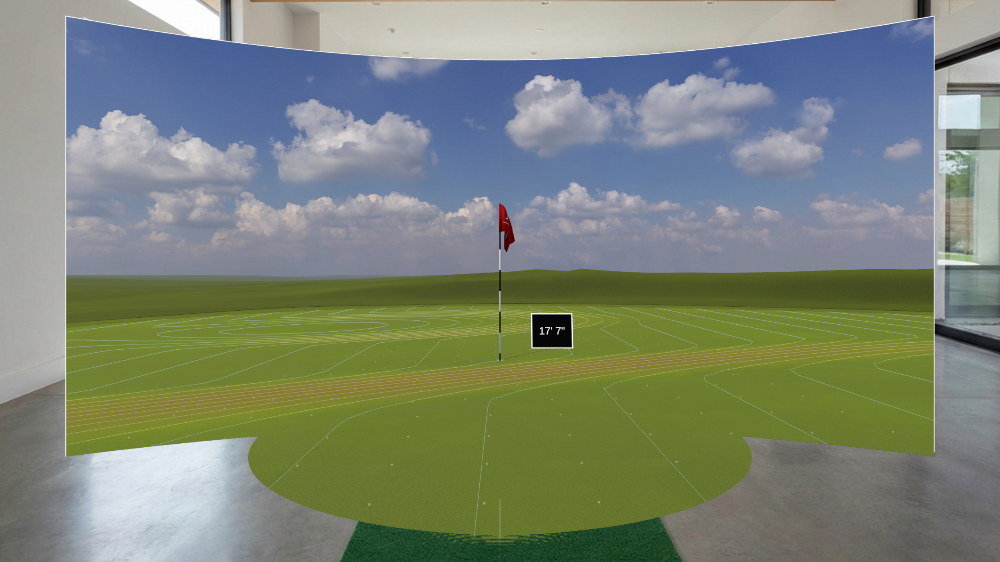

See It In Action
Experience the magic of mixed reality putting.



The closest thing to real putting without leaving home.
Real ball tracking meets mixed reality for the ultimate putting practice experience.
Use your actual golf ball and putter. Watch your ball roll through your space and seamlessly transition into the virtual world.
Step onto a virtual green while standing in your living room. The closest thing to real putting without leaving home.
Unlike controller-based apps, Putt Dojo delivers tactile feedback. Your stroke and contact truly matter.
Experience the magic of mixed reality putting.
Real reviews from real players on the Quest Store.
"An experience every real-life golfer should try."
"I've been wanting to build a putting green for a while now but haven't yet because of the price and space it takes up. It's pretty incredible. The tracking feels accurate and the mixed reality nature of everything is awesome. Having your wall turn into a window to a putting green is one of those things I love about this technology."
"This really is a legit training aid. When I first started, I was about 70% on 8 ft putts. After one weekend, I can routinely hit 20 in a row."
Everything required to get started with real ball mode.
Note: The putting surface should contrast with the ball. A white ball on a darker colored surface works well. The tracking area (1x2ft) should be free of lines/markings, particularly circular markings of similar size and shape to the ball.
You can also play using Quest Touch Controllers, but the full magic is in real ball mode.
If you've ever wished for more realistic, varied putting practice at home, Putt Dojo is for you.